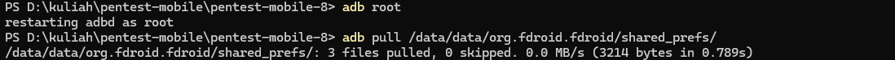
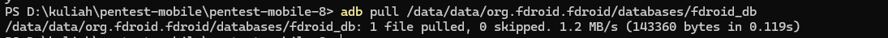
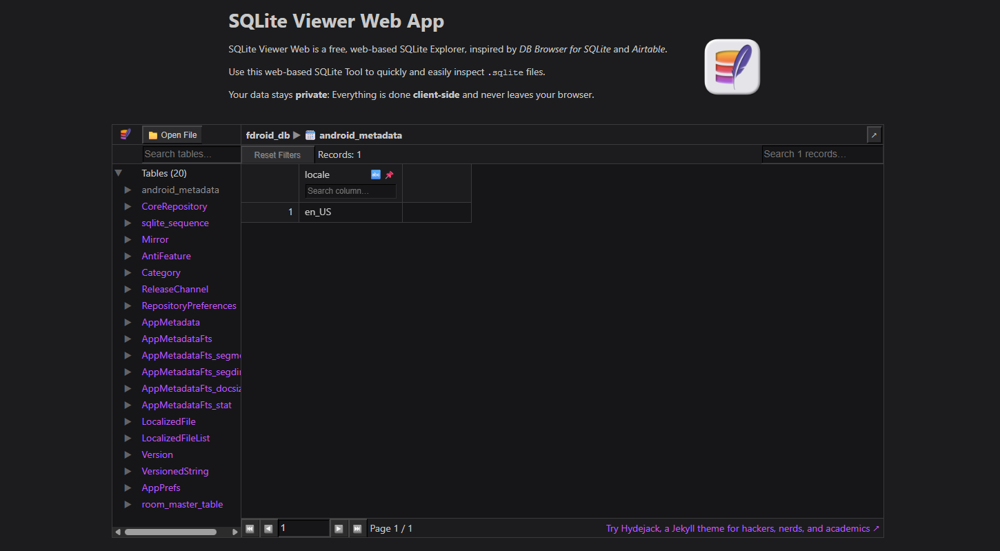
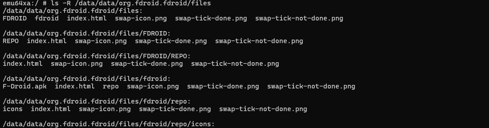

1. Pendahuluan
Insecure Data Storage merupakan salah satu kerentanan umum pada aplikasi Android, di mana aplikasi menyimpan data sensitif tanpa perlindungan yang memadai. Praktikum ini bertujuan untuk mengidentifikasi data sensitif yang tersimpan secara tidak aman melalui file system aplikasi Android menggunakan ADB pada lingkungan Windows 11 tanpa WSL dan tanpa virtual machine.
2. Environment Pengujian
- Host OS: Windows 11 (tanpa WSL, tanpa virtual machine Linux)
- Tools: Android SDK (ADB)
- Device: Android Emulator (rooted)
- Aplikasi Uji: Android App (debuggable)
- Metode: Static file inspection via ADB
3. Praktek 1 – Menemukan File Penyimpanan Aplikasi
Tahap pertama dilakukan untuk mengidentifikasi lokasi penyimpanan data aplikasi. Dengan menggunakan ADB, package name aplikasi dicari kemudian dilakukan eksplorasi direktori internal aplikasi.

Hasil eksplorasi menunjukkan adanya direktori utama seperti:
- shared_prefs/ – penyimpanan konfigurasi aplikasi
- databases/ – database SQLite
- files/ – file tambahan aplikasi
- cache/ – data sementara
4. Praktek 2 – Analisis Shared Preferences
Pada tahap ini dilakukan pengambilan file Shared Preferences untuk melihat apakah terdapat data sensitif yang disimpan tanpa enkripsi.

Dari hasil analisis file XML, ditemukan data berikut:
- Username tersimpan dalam bentuk plaintext
- Token autentikasi tidak dienkripsi
- Flag status seperti
premium=true dapat dimodifikasi
Hal ini menunjukkan bahwa aplikasi rentan terhadap manipulasi status dan kebocoran informasi pengguna.
5. Praktek 3 – Analisis Database SQLite
Database SQLite aplikasi diekstrak untuk dianalisis strukturnya.


Database berhasil diakses dan dibuka menggunakan SQLite Viewer di Windows. Database berisi tabel-tabel metadata aplikasi FDroid. Tabel android_metadata hanya menyimpan informasi locale (en_US).
Tidak ditemukan tabel yang menyimpan:
- Kredensial pengguna
- Password
- Token autentikasi
Tidak ditemukan indikasi Insecure Data Storage pada SQLite Database
6. Praktek 4 – Analisis File Storage (TXT / JSON)
Pada tahap ini dilakukan analisis terhadap direktori /data/data/org.fdroid.fdroid/files untuk mengidentifikasi kemungkinan penyimpanan data dalam bentuk file teks atau file terstruktur.

Berdasarkan hasil pemeriksaan, direktori files berisi file berupa index.html dan beberapa file gambar (.png) yang digunakan sebagai bagian dari repository metadata dan antarmuka aplikasi.
Tidak ditemukan file dengan ekstensi .txt, .json, maupun file lain yang mengandung data sensitif pengguna seperti username, token autentikasi, atau informasi sesi.
Dengan demikian, dapat disimpulkan bahwa aplikasi tidak menyimpan data sensitif secara plaintext pada file system internal, sehingga tidak ditemukan indikasi kerentanan Insecure Data Storage pada aspek file storage.
7. Analisis Risiko Keamanan
Berdasarkan hasil pengujian pada seluruh tahapan praktikum, tidak ditemukan penyimpanan data sensitif pengguna seperti username, password, maupun token autentikasi dalam bentuk plaintext pada penyimpanan internal aplikasi.
Database SQLite yang dianalisis hanya berisi metadata aplikasi dan informasi repository, sedangkan direktori files hanya menyimpan file HTML dan image yang berfungsi sebagai cache dan komponen antarmuka aplikasi.
Dengan tidak ditemukannya data sensitif pada Shared Preferences, database SQLite, maupun file system internal, maka risiko credential leakage, session hijacking, dan manipulasi status aplikasi dinilai rendah pada aplikasi ini.
Hal ini menunjukkan bahwa aplikasi telah menerapkan praktik pengelolaan penyimpanan data yang cukup baik dan tidak menempatkan informasi sensitif pada lokasi yang mudah diakses.
8. Kesimpulan
Praktikum Insecure Data Storage dilakukan melalui empat tahap, yaitu identifikasi struktur penyimpanan aplikasi, analisis Shared Preferences, pemeriksaan database SQLite, dan analisis file system internal menggunakan ADB pada lingkungan Windows 11.
Berdasarkan hasil pengujian, tidak ditemukan data sensitif pengguna yang disimpan secara tidak aman dalam bentuk plaintext pada aplikasi yang diuji. Database SQLite hanya berisi metadata aplikasi, sedangkan direktori file internal digunakan untuk menyimpan komponen non-sensitif seperti file HTML dan gambar.
Dengan demikian, dapat disimpulkan bahwa aplikasi tidak menunjukkan indikasi kerentanan Insecure Data Storage. Kondisi ini mengindikasikan bahwa aplikasi telah menerapkan pengelolaan penyimpanan data yang sesuai dan meminimalkan risiko kebocoran informasi pengguna.
Hasil ini menegaskan bahwa tidak semua aplikasi Android memiliki kerentanan Insecure Data Storage, dan proses pengujian tetap penting untuk memastikan keamanan aplikasi berdasarkan bukti teknis yang ditemukan.